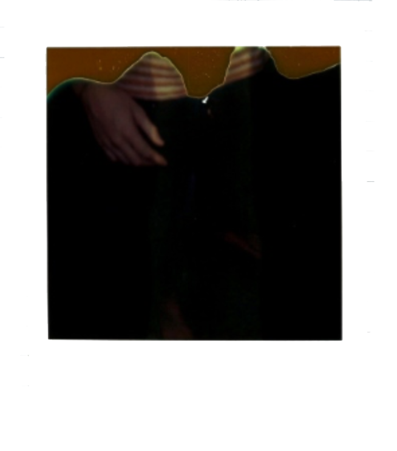

STORY OF A 636 CAMERA

These pictures were taken in my childhood home with an old 636 camera that I got on Amazon when I was fourteen years old. I got some film and the man who sold it to me told me to keep it in the fridge. At first the camera was functioning but it gradually stopped working. In between I got these photographs of my friend Judie. Kind of like watercolor, the images were always a surprise. There is an unpredictable singularity to these images as the polaroids were entirely determined by the camera and not by me. The failing mechanisms means that much the images are always a surprise.